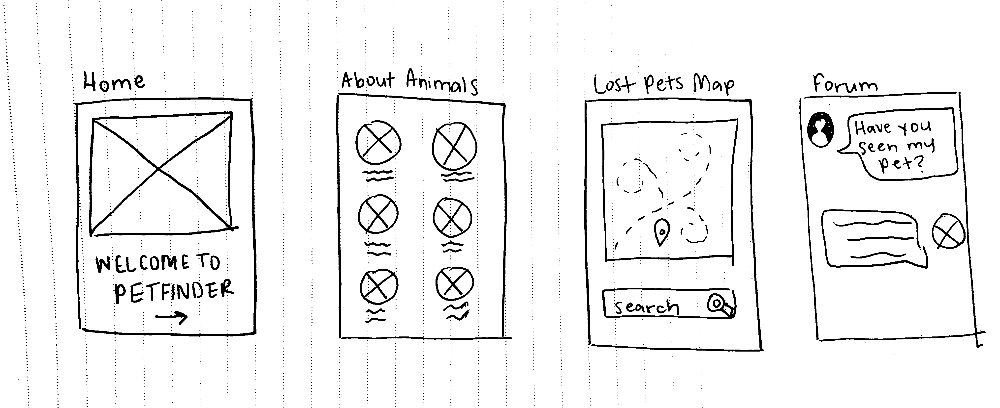

The Petfinder app was designed with a simple to use interface that makes it easy for users to search in their area or surrounding area's for pets or lost pets. Petfinder was designed with a section to adopt animals while getting to see what they look like and to read a description about who they are. Included is another section where users can participate in a forum in their area and let others know that their pet has gone missing, post photos, and reach out to those in their community. I kept the design simplistic to aid in an easy process whether users are looking to adopt or locate lost pets.

For this mobile app, I began with sketches to get a feel for how I wanted my app to look. I decided on the number of pages I would need and what content would go on each page. Afterwards, I worked on putting my project into Adobe XD to get a feel for how the app would function and to see if it was easy to use. Ultimately, I made a few adjustments to make sure that the pages seemed to flow smoothly and that it could do two seperate things. Not only can you search for pets local to your area, but you can also look for missing pets. Users can chat in a forum within their area to share information about missing pets and interact with other locals to ask for help locating them or to recieve any updates.